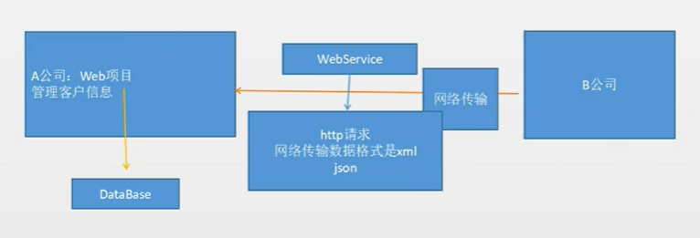

1 WebService的概述与应用场景
1.1 简介
- web服务，它是一种跨编程语言和跨操作系统平台的远程调用技术，即跨平台远程调用技术。
- WebService是一个平台独立的，低耦合的，自包含的，基于可编程的web应用程序。使用开放的xml标准来描述、发布、发现、协调和配置这些应用程序，用于开发分布式的互操作的应用程序。
- 为整个企业甚至多个组织之间的业务流程的集成提供了一个通用机制。
1.2 应用场景

2 WebService 的标准和实现方式
2.1 标准
采用标准SOAP(Simple Object Access Protocol)协议传输，soap属于w3c标准。soap协议是基于http的应用层协议，soap协议传输的是xml数据。soap协议就是标签的格式。
2.2 方式
- 采用wsdl(web service description language) 作为描述语言，wsdl属于w3c标准。
- xml是webservice跨平台的基础，因为它既与平台无关，又与厂商无关。
- XSD，w3c为webservice制定了一套传输数据类型，使用xml进行描述，即XSD(XML Schema Datatypes)，任何编程语言写的webservice接口在发送数据时都要转换成XSD发送。就是一种xml约束。
- WebService数据传输的方式：
- SOAP：http + xml。
- Http rest：一套用来创建webService的方法，REST式的webservice使用http里的方法：get, post, delete, put。
- http 自定义数据协议：比如http传输json协议，http传输xml数据等。
3 WebService 开发规范
Java中共有3种 WebService 开发规范 JAX-WS（JAX-RPC）、JAXM & SAAJ
、JAX-RS。
3.1 JAX-WS 概述
全称为 Java API for XML-Based WebService，Java提供了一个jar包来实现WebService。
JDK1.5 ~ JAX-WS 2.0
JDK1.6.0_13 ~ JAX-WS 2.1
JDK1.7 ~ JAX-WS 2.2
4 JAX-WS
4.1 提供一个查询天气的WebService接口
创建项目，创建一个SEI(Service Endpoint Interface)接口，本质是一个Weather接口。
com.Retur0.weather.WeatherInterface
1 | public interface WeatherInterface{ |
实现天气接口，在类上添加@WebService注解。
WeatherInterfaceImpl
1 |
|
发布服务：
1 | public class Main{ |
此时在浏览器访问本地的12345端口就可以看到WebService服务。（JDK6)
4.2 wsdl 说明书
Web Services Description Language，网络服务描述语言。下面是其中的一些标签。
<service>服务视图，webservice的服务节点，它包括了服务端点。<binding>为每个服务端点定义消息格式和协议细节。<portType>服务端点，描述webservie可被执行的操作方法，以及相关的消息，通过binging指向portType。<message>定义一个操作（方法）的数据参数（可有多个参数）。<types>定义webservice使用的全部数据类型。
4.3 阅读方法
从下往上阅读，先找到服务视图，通过binging找到portType，找到了protType就找到了WebService方法。
4.4 Wsimport 命令
JDK自带的WebService工具，可以根据wsdl文档生成 Java 代码。位于JAVA_HOME/bin目录下。
常用参数：
- -s<目录> 生成.java文件。
- -d<目录> 生成.class文件。默认参数。
- -p<新生成的包名> 将生成的类放于指定的包下。
(wsdlurl) - htttp://server:port/service?wsdl 必须的参数。
示例：
C:/wsimport -s . htttp://server:1234/weather?wsdl
4.5 通过Wsimport生成客户端调用类
保证服务端开启，之后用cmd进入客户端java项目的src目录，输入：
wsimport -keep -d D:\temp\d -s D:\temp\s -p com.map -verbose http://ws.webxml.com.cn/WebServices/MobileCodeWS.asmx?wsdl
完成之后src下就会出现通过wsimport生成的客户端调用类。
4.6 WebService客户端编写
- 创建服务窗口。
- 通过服务对象找到服务端点。
- 调用WebService的方法。
main.java
1 | public class Main{ |
5 ApacheCXF 框架实现 WebService（Jax-ws)
5.1 服务端
使用到的依赖包有：cxf-rt-frontend-jaxws、cxf-rt-transports-http-jetty（服务器）、junit、log4j。
定义业务接口并实现：
HelloImpl.java
1 | public class HelloImpl implements HelloService { |
发布服务：
1 | public class Server { |
5.2 客户端
客户端需要有服务接口的java文件。
获取服务，Client.java:
1 | public class Client { |
6 例子：获取手机归属地服务
先用 wsimport 命令在项目里生成需要的类和接口：
1 | wsimport -s [想要存放的路径] http://ws.webxml.com.cn/WebServices/MobileCodeWS.asmx?wsdl |
Client.java
1 | public class Client { |
成功在控制台获得号码归属地。